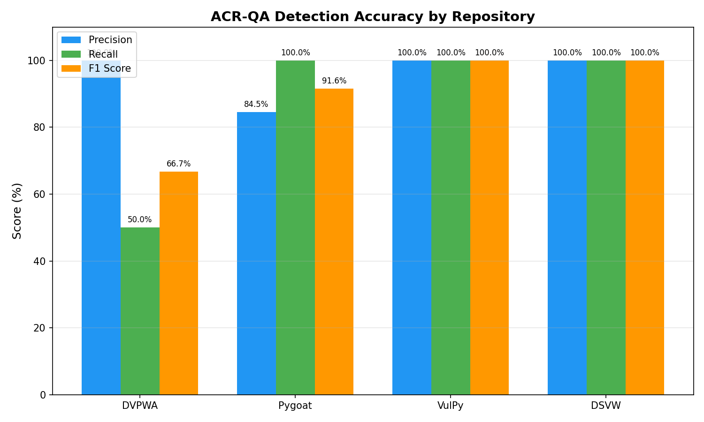
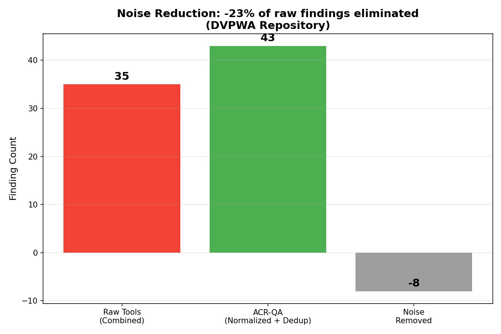

King Salman International University · Faculty of Computer Science & Engineering · El-Tor Campus, South Sinai
10+ tools · one schema · RAG-grounded AI · zero recurring cost
1,699 tests · 97% precision · 100% AI rate · 836 findings · 311 rules · FastAPI · Celery · JWT · Docker
10+ tools · no dedup · no ranking
Confident but wrong advice — no grounding
% metric hides complex untested functions
Can RAG eliminate AI hallucination?
Full provenance for every AI finding?
Best confidence scoring model?
Does pipeline match industry precision?
Issue: [B608] Possible SQL injection Severity: Medium CWE: CWE-89 Location: dao/student.py:42
Self-hosted · $0 · one schema · RAG-restricted LLM · entropy scoring · PostgreSQL audit trail
Python · JavaScript/TypeScript · Go
311 mappings → CanonicalFinding · −27% noise
5 signals · weighted score 0–100
66 rules · Groq LLaMA · 3× runs · N-gram entropy
62 algos · NIST PQC 2024 · SAFE / WARN / UNSAFE
Block / Warn · CI/CD gate · full audit trail
22 endpoints · Prometheus · inline suggestions

Fig. 3 — Precision & Recall by repository (evaluation suite)
| Repo | Findings | Precision | Sec. Prec. |
|---|---|---|---|
| DVPWA | 44 | 81.8% | 100% |
| Pygoat | 440 | 96.4% | 100% |
| VulPy | 293 | 100% | 100% |
| DSVW | 59 | 100% | 100% |
| GoVWA Go | 46 | 100% | 100% |
A09 = runtime logging · planned Phase 2

Fig. 4 — Raw vs ACR-QA output · noise reduction per repo
3× LLM runs · N-gram score · flags hallucination
62 algorithms · SAFE / WARN / UNSAFE · Python + JS/TS
AST match · complexity rank · no commercial equivalent
5 weighted signals · score 0–100
SQLi→XSS chains · Python↔JS/TS
| Feature | ACR-QA | SonarQube / CodeRabbit |
|---|---|---|
| Multi-tool normalisation | ✓ | ✗ |
| RAG-grounded AI explanations | ✓ | Partial |
| Entropy confidence scoring | ✓ | ✗ |
| CBoM + NIST PQC | ✓ | ✗ |
| AST test gap analysis | ✓ | ✗ |
| Self-hosted / $0 recurring | ✓ | ✗ |
Retrieval beats system prompts
Variance → confidence, zero labels
One schema → adapters just work
Scope exclusions preserve precision
Cross-function vuln chains
Inline PR suggestions
Fix time · trust calibration
Multi-tenant · OAuth2 · IDE plugin
97% precision · 882 findings · −27% noise · 9/10 OWASP · 1,699 tests.
4 novel contributions: entropy scoring · NIST PQC CBoM · AST test gaps · cross-language correlator.
Self-hosted · $0 recurring · full CI/CD · Docker Compose.